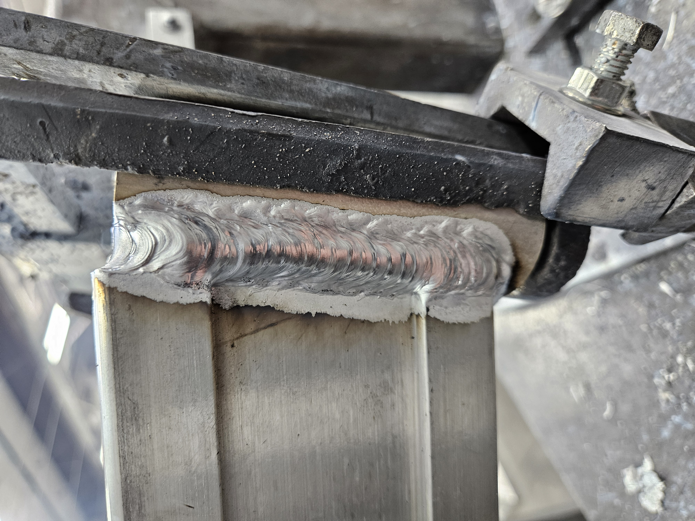

Professional Experience
Aerospace-Grade Fabrication
- Role: Welder at Communications and Power Industries (CPI).
- Expertise: High-precision Aluminum MIG Welding within the communications industry.
- Focus: Maintaining structural integrity and metallurgy standards for aerospace-grade equipment.


Industrial Maintenance & Infrastructure
- General Technician I (TxDOT): Technical maintenance and operational support for state-level infrastructure.
Scan to view my portfolio on mobile